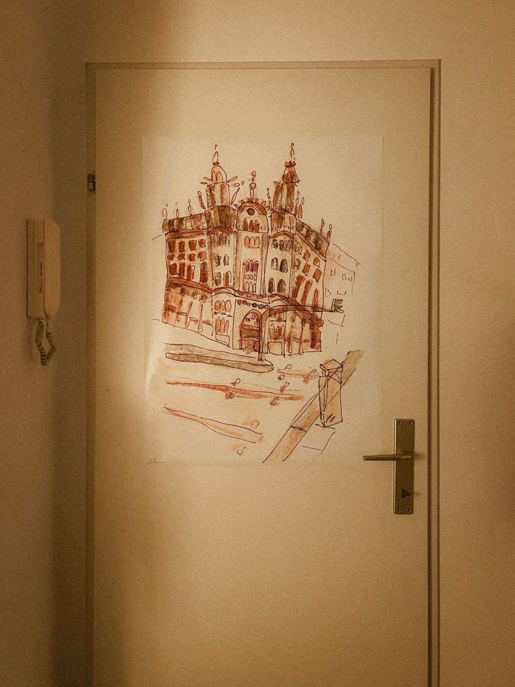
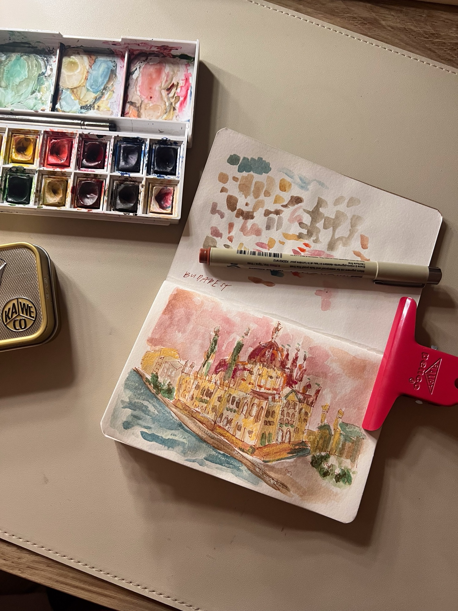
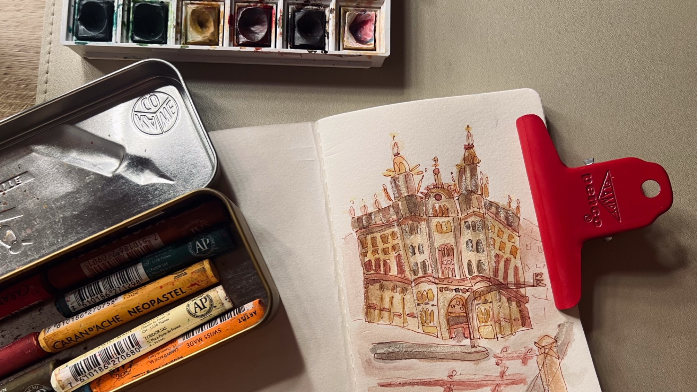
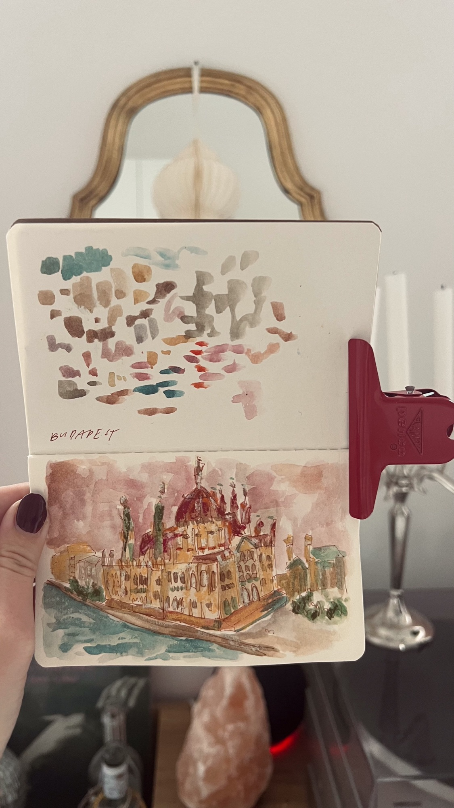
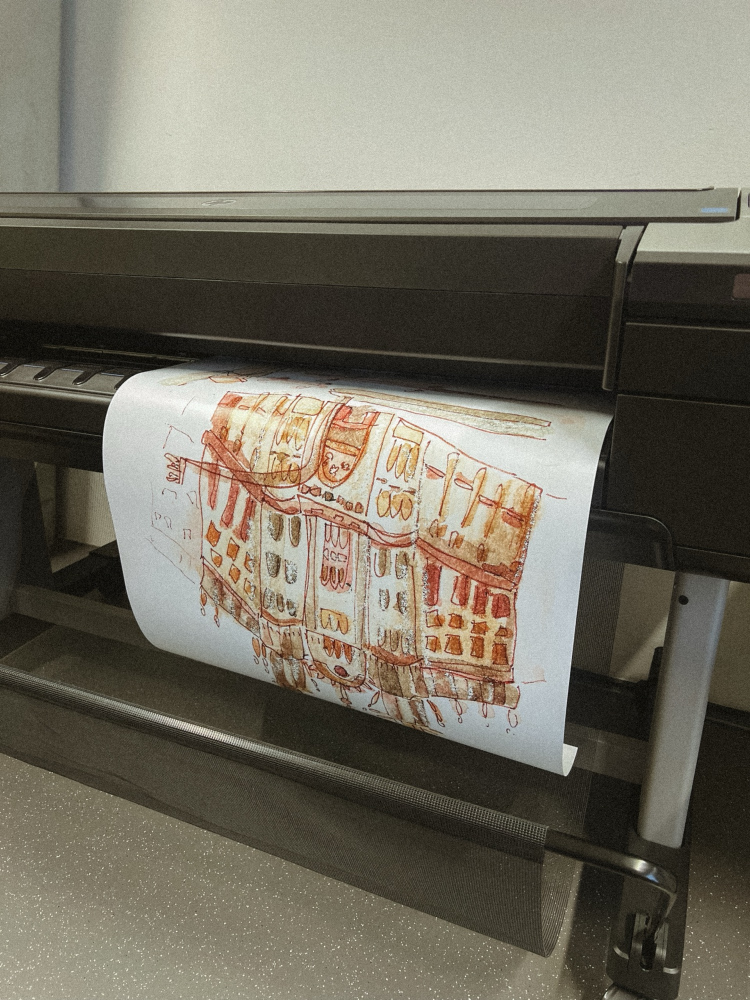
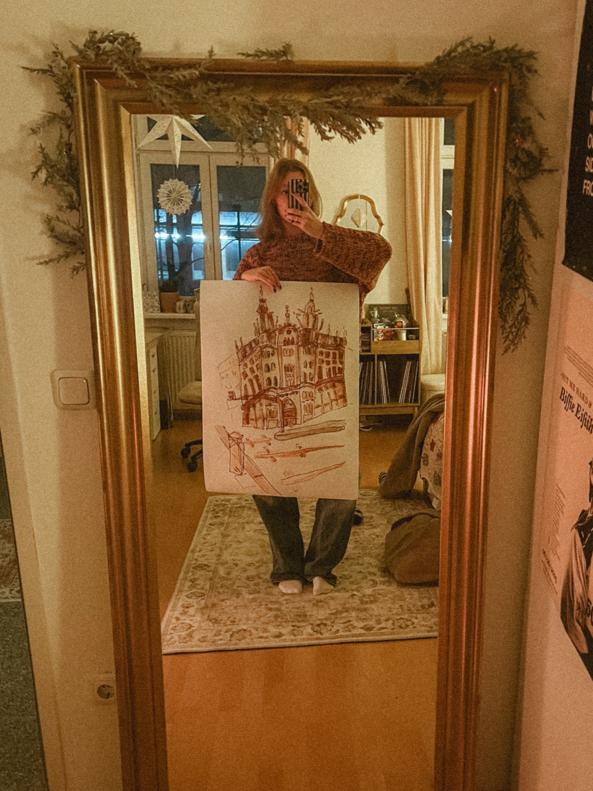

Die Budapest Illustrationen zeigen die Stadt auf eine neue Art. Mit braunem Fineliner und Aquarell zeige ich hier 2 Ansichten der Stadt, die als Poster als auch als Postkartenansicht funktionieren.





